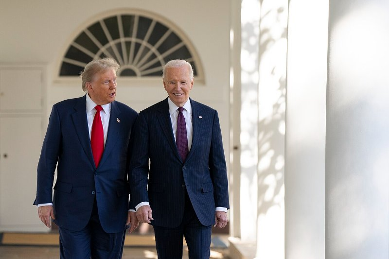

![NTK]()

Trump's Inauguration Day Letter Praised Biden's Love for the American People
The letter was waiting in the Oval Office on Jan. 20, 2021. Trump had skipped Biden's swearing-in that morning and flown to Palm Beach instead, after months of personal attacks on Biden and an effort to overturn the election results (The Daily Beast). What he left behind read like a note from a mentor. "Coming to work every day in the Oval Office is a blessing beyond imagination," it began, and it closed with "May God bless you and Jill" (Mediaite).
The letter carried no attacks on Biden and no challenge to the election results (The Daily Beast). It told Biden that many presidents "were just swept along in its relentless tide," and that this would not happen to him "because I know how much you love the American people" (Mediaite).
Biden held it for nearly six years. Now 83 and treating an aggressive prostate cancer that spread to his bones, he reprinted it in full in his book Promise Me, America, and The New York Times obtained an excerpt (The New York Times). He wrote that it left him feeling "as if there were two Donald Trumps" (The Daily Beast).
That is the part of the story that was always going to travel. The reaction to it is the part that explains what Biden was actually describing.
The White House Answered With the Other Donald Trump
A letter this gracious invites one obvious response from the man who wrote it. Steven Cheung, the White House communications director, whose job is to answer for Trump in a single sentence, chose a different one. "Joe Biden should have heeded the president's wise words, but instead he tried to destroy this country and weaponize the justice system against his political enemies," he told the Times. "Biden is a disgrace, and America is better off with him no longer as president" (Mediaite).
So the letter and the statement now exist side by side, both issued by Trump's office. One praises Biden's love for the American people. The other accuses him of trying to destroy them. Cheung gave the Daily Beast the same words, so the answer was prepared before the question was asked (The Daily Beast).
Biden's account suggests the split runs in both directions. When the two men met in the Oval Office after Trump's 2024 victory, Biden writes, Trump was "immediately chatty" and so friendly that Biden "thought he might be putting me on." Trump told him that "if it weren't for politics, we'd spend all our time golfing together." Biden notes that Trump had refused him that same courtesy four years earlier (The Daily Beast).
The warmth shows up in private, in a sealed envelope or an Oval Office chat, and the contempt shows up wherever there is a microphone. Biden, who says treatment will limit his public appearances, has handed the book the job of speaking for him. "I'm hopeful the words on the page speak for themselves," he wrote on X (The Daily Beast). On this one, the words on the page belong to Trump.
The letter is out. The next two weeks decide who gets to use it.
Trump's Team Will Answer the Book by Attacking Its Author, Not the Letter
The letter itself is nearly impossible to contest, since Trump signed it and Biden has a photocopy. So the White House will go after what surrounds it. The most likely line, already previewed in the Cheung statement, is that a sick man's memoir is a vehicle for Biden's own reputation repair. Expect the argument that Biden is lying about his motives, not about the text, and that the warm note was a courtesy Biden turned into a weapon. That fits how this White House has handled documents it cannot deny: it disputes the intent and leaves the paper alone.
Biden gains little from a fight. He said treatment will limit his book appearances, which means he will not be in the room to answer back. That leaves the Trump side with the loudest voice in the exchange, and in a news cycle, the loudest voice usually sets the frame.
The Next Excerpts Will Matter More Than This One
The letter is the mildest thing in the book. Biden's account of the Oval Office meeting after the 2024 election has already appeared in The Atlantic, and Promise Me, America has more pages than anyone has seen. The Times and The Atlantic each got a slice, which is how publishers stage a rollout: one excerpt per outlet, spaced out, each one a new news cycle. The most likely outcome is that further excerpts surface before the release date, and that at least one concerns Biden's own decisions, including the questions about his age and the 2024 debate that Trump's allies have used for years.
That is where the book stops being a story about Trump's two faces and becomes a story about Biden's. Trump's office has every incentive to wait for those pages, then use them. The Democrats who hoped the letter would play as a rebuke of Trump will find that Biden's memoir has other readers, and some of them are looking for the next chapter.
Neither Man Moves, and That Is the Real Prediction
The letter will not soften anything. Trump's public posture toward Biden has held for nearly six years through every private kindness, and there is no mechanism in this story that changes it. The warmth was never a policy. It lived in sealed envelopes and Oval Office chats, and the Cheung statement shows which version of Trump the government runs on.
The people with something to lose are those who read the letter as a sign of a thaw. Within two weeks, expect Trump or his allies to say something about Biden that makes the letter look like a different man's work. When that happens, the letter will not have changed anything. It will have become a record of how little the private Trump costs the public one.
Two men with matching sealed envelopes, and a book with more pages than anyone has seen.
Biden's Book Turns Presidential Transition Letters Into Evidence
For decades, the letter left in the Oval Office stayed in the Oval Office. Presidents wrote them, successors read them, and the content surfaced years later in memoirs. What changed this week is that a private note now sits beside a public record, with both authored by one office. Biden published the text in full, so a copy exists outside any archive Trump controls (The Daily Beast). That opens a door for any future successor, or any former president with a book contract, to treat a transition letter as a document that might someday be quoted back. Trump's own letter to Biden gave him no reason to expect that. The next one he writes, or receives, gets written for a different audience.
Trump's 2024 Oval Office Meeting Gives Biden's Successors a Template for Calling Out Private Warmth
The letter alone would be a curiosity. The Oval Office meeting after Trump's 2024 victory is what makes it a pattern. Biden wrote that Trump offered the friendliness he had denied Biden four years earlier, and said they would be golfing buddies if not for politics (The Daily Beast). Two private kindnesses, years apart, now sit on the record alongside a public contempt that never wavered. Any Democrat or Republican who sits across from Trump in a closed room can now bring that record with them. A cordial meeting becomes a data point, and a refusal to repeat the pleasantries in public becomes a story. This is the room Biden's book opened: private warmth is now cheap for Trump to give and expensive for him to deny.
The Letter Hands the Next Bipartisan Dealmaker a Reason to Go Public Early
That second door leads somewhere constructive. If private warmth can be quoted, then private agreements can be too. A senator or governor who strikes a quiet deal with this White House now has a worked example of what happens when the private version stays private for six years: it arrives as a footnote. Anyone negotiating on childcare, immigration or disaster aid can insist on a joint statement the same day, because Biden's book showed the cost of waiting. Cheung's prepared response shows the public line is set before any private conversation ends (Mediaite). A deal announced together is harder to disown than one revealed later.
I'm hopeful the words on the page speak for themselves.
Joe Biden, on XBiden, too sick to tour, bet on the page. A page, once printed, turns out to be a tool for the next person who needs one.
The letter is real. The stories being built on top of it are not.
"The Letter Proves Trump Was Always Sincere, and Biden Is the One Who Turned on Him"
The claim comes from Trump's own communications office, and it is built into a single sentence. Steven Cheung's statement says Biden "should have heeded the president's wise words" (Mediaite). Read it again. The letter becomes a warning that Biden ignored, and the six years of attacks that followed become a response to Biden's conduct instead of a choice Trump made.
Why would anyone accept that? Because it answers a real discomfort. A person who reads the letter and then looks at the public record feels something wrong in the arithmetic, and Cheung's version resolves it cleanly: the kind man was provoked. That is easier to hold than the alternative, which is that the warmth cost nothing and the contempt never wavered.
The beneficiary is the man who wrote both documents. If the letter is sincere, Trump gets credit for graciousness. If the attacks are justified, he pays nothing for them. Under Cheung's framing he collects on both, and the only party left holding the bill is Biden.
The record Cheung's sentence has to climb over is Trump's own. The letter said nothing of warning. It spoke of Biden's love for the American people and ended with "May God bless you and Jill." It contained no instruction to heed and no condition attached (The Daily Beast). The "advice" Cheung says Biden ignored is a reading added after the fact. And the attacks on Biden were already running when the letter was written: Trump had spent months on personal insults and an effort to overturn the election before he set a pen to that paper.
There is a second problem with the sequence. A man who wrote the letter as sincere guidance and then watched it ignored would have reason to be hurt. A man who wrote it as a courtesy, then ran the same campaign he would have run anyway, has a different explanation: the letter was one thing and the politics were another. Biden's own account of the 2024 Oval Office meeting points the same direction. Trump offered the friendliness he had withheld before, and said politics was the only thing between them (The Daily Beast). That is not a man betrayed. That is a man who treats warmth and hostility as separate tools.
Biden is a disgrace, and America is better off with him no longer as president.
Steven Cheung, White House communications directorThe pairing of letter and statement is what a rebuttal looks like when the document cannot be denied. The paper stays, the meaning moves. A reader who accepts the move has agreed that a man's private kindness can be turned, after the fact, into proof that his public cruelty was earned. Almost no one would accept that rule applied to themselves.